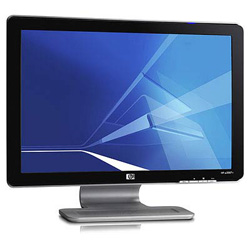

Monitor HP H2250
22'' HDTV c/ entr. HDMI
Disponibilidade: Em estoque
Marca: HP - http://www8.hp.com/br/pt
Modelo: 251-2250
Referência: 02250
De: R$ 455,00
Por: R$ 399,99
|
 |
|
Com o novo monitor multimídia HDTV você poderá assistir TV, além de conectar uma variedade
de dispositivos de alta definição em sua entrada HDMI. Possui um alto contraste dinâmico, 10,000:1,
especial para o monitor multimídia TV. Com a resolução máxima de 1680 x 1050 em sua tela widescreen,
sua imagem fica clara e perfeita, além de gerar imagens com mais brilho (300 cd/m²).
Seu amplo ângulo de visão (H: 170º / V: 160º), tempo de resposta de apenas 5 ms e com seus
alto-falantes embutidos com Dolby Digital Sourround realça seu design.
|
|